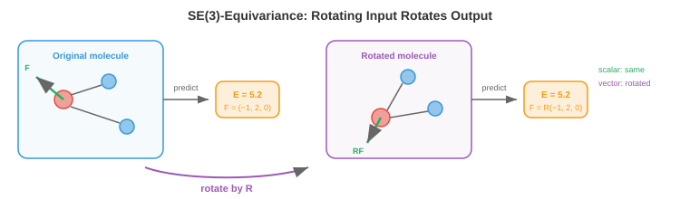

3D Graph Networks¶
3D graph network 将 GNN 扩展到具有空间几何的数据，在这类数据中必须正确处理旋转与平移。本文件覆盖 geometric graph、SE(3)/E(n)-equivariance、SchNet、DimeNet、EGNN、tensor field network，以及其在分子性质预测、蛋白质结构、材料科学与药物发现中的应用——这些架构让模型能够从 3D 物理世界中学习。
-
文件 3 与文件 4 的 GNN 主要处理抽象 graph：node 有 feature，edge 表示连通关系，但没有显式 3D 空间概念。社交网络 graph 就是典型无几何结构的例子。然而，GNN 最有影响力的应用之一恰恰来自物理 3D 空间数据：分子、蛋白质、晶体、point cloud。对这类任务，node 的空间位置信息至关重要，而抽象 GNN 往往忽略这一点。
-
难点在于 3D 数据具有几何 symmetry（见文件 1）：旋转分子不应改变其性质，整体平移也不应改变。3D GNN 必须尊重这些 symmetry。若模型预测的能量会因旋转而变化，那在物理上就是错误的。
Geometric Graph¶
-
geometric graph 是嵌入在 3D 空间中的 graph。每个 node \(i\) 除了 feature 向量 \(\mathbf{h}_i\) 外，还具有位置 \(\mathbf{r}_i \in \mathbb{R}^3\)。edge 可由空间邻近关系定义（例如连接距离小于 \(r_{\text{cut}}\) 的 node），而不一定来自显式化学键。
-
对分子来说，geometric graph 的 node 是原子（feature 可包含元素类型、电荷等），edge 是化学键。3D 位置 \(\mathbf{r}_i\) 即原子坐标，可来自量子力学计算或实验测量（X-ray crystallography、cryo-EM）。
-
对 point cloud（来自 LiDAR 或 3D 扫描，见第 8 章与第 11 章），每个点都是 node，带位置及可选 feature（颜色、强度等）。edge 通常连接空间近邻点，形成 k-nearest-neighbour（kNN）graph 或 radius graph。
-
用于 message passing 的关键几何量包括：
-
原子间距离：\(d_{ij} = \|\mathbf{r}_i - \mathbf{r}_j\|\)。distance 对旋转和平移都 invariant。若两分子的所有原子间距离一致，它们形状相同（无论朝向如何）。
-
键角：在 node \(i\) 处，向量 \(\mathbf{r}_j - \mathbf{r}_i\) 与 \(\mathbf{r}_k - \mathbf{r}_i\) 的夹角 \(\theta_{ijk}\)。angle 能提供超越 pairwise distance 的局部几何信息。
-
二面角（扭转角）：平面 \((i, j, k)\) 与平面 \((j, k, l)\) 的夹角 \(\phi_{ijkl}\)。dihedral 描述 3D 扭转结构，对蛋白质骨架几何尤为关键。
-
相对位置向量：\(\mathbf{r}_{ij} = \mathbf{r}_j - \mathbf{r}_i\)。它对平移 invariant，但不对旋转 invariant。若使用它，就需要 equivariant（而非仅 invariant）架构。
-
SE(3) 与 E(n) Equivariance¶
-
3D 物理数据对应的 symmetry group 是 Euclidean group \(E(3)\)，包含全部旋转、反射和平移。其子群 \(SE(3)\)（Special Euclidean）包含旋转和平移，但不包含反射。
-
一个 3D GNN 应满足：
- 对标量输出（能量、结合亲和力）保持平移 invariant：所有原子同时平移同一向量，不应改变预测。
- 对标量输出保持旋转 invariant：旋转分子不应改变其能量。
- 对向量/张量输出（力、偶极矩）保持旋转 equivariant：旋转分子后，预测向量应按同样旋转变换。

- 形式化地，若标量预测为 \(f\)、旋转为 \(R \in SO(3)\)：
- 若向量预测为 \(\mathbf{F}\)：
-
这些约束与文件 1 的 invariance/equivariance 框架完全一致，只是这里具体应用到 3D 旋转与平移群。
-
架构设计通常有两条路线：
- invariant 架构：仅使用 invariant 几何特征（distance、angle）作为 message passing 输入。内部表示是标量（invariant）。优点是简单高效；缺点是难以自然输出向量。
- equivariant 架构：在网络中持续维护向量（及更高阶张量）表示，保证每层都 equivariant。表达力更强，可自然预测向量/张量，但实现更复杂。
SchNet：基于 Distance 的 Message Passing¶
-
SchNet（Schütt et al., 2017）是经典的 invariant 3D GNN。其关键创新是 continuous filter convolution：不像传统分子 GNN 用离散 edge 类型（如键类型），SchNet 直接根据原子间 distance 生成 message filter。
-
distance \(d_{ij}\) 首先通过 radial basis function（RBF） 展开为特征向量：
-
每个基函数都是以 \(\mu_k\) 为中心、宽度为 \(\gamma_k\) 的 Gaussian。可把它理解为 distance 的可学习 positional encoding：把连续 distance 映射到高维空间，便于学习距离相关相互作用。\(\mu_k\) 常均匀覆盖从 0 到 cutoff radius 的区间。
-
SchNet 从 node \(j\) 到 node \(i\) 的 message 为：
-
其中 \(W_{\text{filter}}\) 是把 RBF 特征映射成 filter 向量的 MLP，\(\odot\) 是逐元素乘（Hadamard product，见第 2 章）。因为 filter 依赖 distance，近邻原子与远邻原子的交互可不同。逐元素乘也可视为 gating（第 6 章）：由 distance 决定每个特征维度通过多少信息。
-
SchNet 只使用 distance（invariant），因此模型天然对旋转和平移 invariant，不需要额外 symmetry 处理。
DimeNet 与 SphereNet：Angle 与 Dihedral¶
-
仅靠 distance 不能完整确定 3D 结构。不同分子构象可能有相同 pairwise distance 但 angle 不同（即“distance geometry ambiguity”问题）。DimeNet（Gasteiger et al., 2020）在 message passing 中显式引入 bond angle。
-
DimeNet 采用 directional message passing：message 沿有向 edge 传播，且边 \((j \to i)\) 上的 message 会受边 \((k \to j)\) 与 \((j \to i)\) 之间 angle 的影响：
-
其中 angle \(\theta_{kji}\) 会通过球 Bessel 函数与 spherical harmonics 展开（球面角信息的自然基，可类比 RBF 对 distance 的作用）。这样模型在保持 invariance 的同时获得方向信息。
-
SphereNet（Liu et al., 2022）更进一步加入 dihedral angle \(\phi_{lkji}\)，捕获完整的 3D 扭转结构。可理解为逐层增强几何分辨率：
- distance：捕获成对邻近关系
- angle：捕获局部几何（弯曲/线性）
- dihedral：捕获 3D 扭转（对蛋白质骨架、药物结合尤关键）
-
几何分辨率越高，计算开销越大（distance 为 \(O(|E|)\)，angle 为 \(O(|E| \cdot k)\)，dihedral 为 \(O(|E| \cdot k^2)\)，其中 \(k\) 为平均 degree）。
E(n) Equivariant GNN（EGNN）¶
-
EGNN（Satorras et al., 2021）走 equivariant 路线：不仅更新 node feature，也在每层更新 node position，并在整个过程中保持 equivariance。
-
EGNN 对 node \(i\) 的更新为：
-
核心在位置更新：node position 通过相对位置向量 \((\mathbf{r}_i - \mathbf{r}_j)\) 的加权和来修正，权重来自 \(\phi_r\)，而 \(\phi_r\) 仅依赖 invariant 量（feature 与 distance）。这种构造可证明保持 equivariance：若输入位置整体乘以旋转 \(R\)，输出位置也会整体乘以同一 \(R\)。
-
EGNN 的优雅之处在于：无需显式使用 spherical harmonics 或不可约表示即可实现 equivariance。相对位置向量提供方向信息，invariant 的 message 函数决定如何使用这些方向信息。
-
但其简洁性也有取舍：EGNN 主要处理一阶向量表示，若要原生表示更高阶张量（如四极矩、应力张量）需额外扩展。
Tensor Field Network 与高阶表示¶
-
Tensor Field Network（Thomas et al., 2018）及其后续（SE(3)-Transformer、MACE、Equiformer）使用旋转群不可约表示理论的完整工具链来构建 equivariant layer。
-
在表示理论中（可联系第 2 章线性代数），3D 旋转可分解为由整数阶 \(\ell\) 表征的不可约分量：
- \(\ell = 0\)：标量（1 个分量，invariant），如能量、电荷。
- \(\ell = 1\)：向量（3 个分量，按位置向量方式旋转），如力、偶极矩。
- \(\ell = 2\)：二阶对称无迹张量（5 个分量），如四极矩、应力张量。
- 更高 \(\ell\)：表达更复杂角向结构。
-
这些称为 spherical tensor，在旋转 \(R\) 下通过 Wigner-D 矩阵 \(D^\ell(R)\) 变换：标量不变，向量按 \(R\) 旋转，二阶张量按更复杂矩阵变换。
-
基于 spherical tensor 的 equivariant message passing 使用 Clebsch-Gordan tensor product 组合不同阶特征：
-
Clebsch-Gordan 系数 \(C\) 是固定数学常数，保证该 tensor product 保持 equivariant。它可看作 SO(3)-equivariant 版本的“矩阵乘法”。
-
MACE（Batatia et al., 2022）通过更高阶 message（多邻居特征乘积）在较少 message-passing 层中获得高精度。它按体阶构造交互：2-body 来自 distance、3-body 来自 angle、many-body 来自 tensor product，从而高效捕获复杂原子相互作用。
-
Equiformer（Liao & Smidt, 2023）将 equivariant spherical tensor feature 与 transformer attention（文件 4）结合，形成 SE(3)-equivariant Graph Transformer。attention score 由 invariant feature 计算，而 value 聚合在 equivariant tensor feature 上执行。
应用场景¶
-
分子性质预测：给定分子 3D 结构，预测能量、力、偶极矩、HOMO-LUMO gap、毒性、溶解度等。这是 3D GNN 最成熟的应用方向。基于量子化学数据集（QM9、OC20）训练的模型在多项性质上达到接近化学精度，可用于大规模虚拟筛选。
-
分子动力学加速：用量子力学（如 DFT）计算原子间力代价极高（对 \(n\) 电子常见 \(O(n^3)\)）。训练好的 3D GNN 可在分子动力学中替代 DFT 力计算，在接近 DFT 精度下带来 \(10^3\) 到 \(10^6\) 级加速，支持更大体系与更长时间尺度模拟。
-
蛋白质结构建模：蛋白质是氨基酸链折叠形成的复杂 3D 结构。其骨架可表示为 geometric graph：node 是残基，edge 连接空间近邻残基。3D GNN 可用于蛋白功能预测、结合位点识别、蛋白设计（逆折叠：给定目标结构预测氨基酸序列）。AlphaFold 也融合了几何与 graph 推理思想。
-
材料科学与催化：晶体材料具有周期性 3D 结构。GNN 可建模重复单胞并预测带隙、形成能、力学强度等性质。Open Catalyst Project（OC20/OC22）基准即评测 GNN 对催化表面吸附能预测能力，帮助加速新能源催化剂发现。
-
药物发现：3D GNN 用于预测药物分子与靶蛋白的结合方式。结合亲和力依赖药物与蛋白结合口袋的 3D 形状互补与化学相互作用。像 DiffDock 这样的模型将 equivariant GNN 与 diffusion（第 8 章）结合，用于预测 binding pose（药物在蛋白口袋中的 3D 位姿）。
Graph Generation¶
-
前述架构都在分析已有 graph。graph generation 则是生成新 graph：例如设计目标性质分子、合成测试用社交网络、提出新蛋白结构。这是 graph-level 预测的生成式对应任务。
-
难点在于 graph 是离散的、可变长的、组合空间巨大的。生成一个 graph 意味着要决定 node 数量、每个 node 的 feature、以及任意 node 对是否连接。可选 graph 数随 node 数超指数增长。
-
autoregressive generation 按 node（或 edge）逐步构造 graph。GraphRNN（You et al., 2018）即按序生成：RNN 维护状态，每步生成一个新 node，并决定它与已有 node 的连接。虽然这给无序 graph 强加了序列顺序，但使用 BFS 顺序通常更稳定，因为近期生成的 node 更相关。
-
VAE-based generation 先用 GNN encoder 将 graph 编到连续 latent 空间，再从采样 latent 解码 graph。GraphVAE 一次性生成概率 adjacency matrix \(\hat{A} \in [0, 1]^{n \times n}\)，但其复杂度是 \(O(n^2)\)，且输出偏稠密，需要阈值化。latent 空间带来平滑插值能力：在两分子 embedding 之间移动可生成化学上可行的中间结构。
-
diffusion-based generation 把第 8 章 diffusion 框架用于 graph。前向过程逐步给 node feature 与 edge 结构加噪；反向过程学习去噪，从噪声生成有效 graph。DiGress（Vignac et al., 2023）对 node 类型和 edge 类型都做离散 diffusion，天然契合 graph 数据的类别属性。
-
对分子生成而言，核心约束是化学有效性：生成分子必须满足价键规则（如碳常成 4 键、氧常成 2 键等）。Junction Tree VAE（JT-VAE） 把分子分解为合法子结构（环、链、官能团）再组合生成，可在构造层面保证有效性。
-
goal-directed generation 会针对指定目标优化：例如生成对某蛋白结合亲和力高、毒性低、溶解性好的分子。通常把 graph generation 与性质预测（3D GNN 作为评估器）组成闭环：生成 → 评估 → 精化。可用强化学习（第 6 章）或贝叶斯优化引导搜索。
-
DiffDock（Corso et al., 2023）使用 SE(3)-equivariant diffusion 预测药物分子在蛋白结合口袋中的 dock 方式。模型从随机位姿出发逐步去噪，生成 3D binding pose（药物相对蛋白的位置与朝向），把本文件的 3D equivariant network 与第 8 章 diffusion 框架结合在一起。
Coding Tasks（使用 CoLab 或 notebook）¶
-
用原子间 distance 构建一个简单的 invariant 3D message-passing layer。将其应用到小分子（water: H-O-H），并验证输出对旋转保持 invariant。
import jax import jax.numpy as jnp # Water molecule: O at origin, two H atoms positions = jnp.array([[0.0, 0.0, 0.0], # O [0.96, 0.0, 0.0], # H1 [-0.24, 0.93, 0.0]]) # H2 # Node features: [atomic number] features = jnp.array([[8.0], [1.0], [1.0]]) # Compute pairwise distances (invariant) def pairwise_distances(pos): diff = pos[:, None, :] - pos[None, :, :] return jnp.sqrt(jnp.sum(diff**2, axis=-1) + 1e-8) # Simple distance-based message passing def invariant_message_pass(features, positions): dists = pairwise_distances(positions) # RBF expansion with 4 centres centres = jnp.array([0.5, 1.0, 1.5, 2.0]) rbf = jnp.exp(-5.0 * (dists[:, :, None] - centres[None, None, :]) ** 2) # Message: features weighted by distance-dependent filter messages = jnp.einsum("ij,jd->id", rbf.sum(axis=-1), features) return messages output1 = invariant_message_pass(features, positions) # Rotate the molecule by 90 degrees around z-axis R = jnp.array([[0, -1, 0], [1, 0, 0], [0, 0, 1]], dtype=float) rotated_positions = (R @ positions.T).T output2 = invariant_message_pass(features, rotated_positions) print(f"Original output:\n{output1}") print(f"\nRotated output:\n{output2}") print(f"\nInvariant: {jnp.allclose(output1, output2, atol=1e-5)}") -
计算三个原子构成的 bond angle，并验证该角度对旋转 invariant。
import jax.numpy as jnp def bond_angle(r_i, r_j, r_k): """Angle at node j between edges j->i and j->k.""" v1 = r_i - r_j v2 = r_k - r_j cos_angle = jnp.dot(v1, v2) / (jnp.linalg.norm(v1) * jnp.linalg.norm(v2)) return jnp.arccos(jnp.clip(cos_angle, -1, 1)) # Three atoms r1 = jnp.array([1.0, 0.0, 0.0]) r2 = jnp.array([0.0, 0.0, 0.0]) r3 = jnp.array([0.0, 1.0, 0.0]) angle_original = bond_angle(r1, r2, r3) print(f"Original angle: {jnp.degrees(angle_original):.1f}°") # Apply random rotation R = jnp.array([[0.36, 0.48, -0.80], [-0.80, 0.60, 0.00], [0.48, 0.64, 0.60]]) r1_rot, r2_rot, r3_rot = R @ r1, R @ r2, R @ r3 angle_rotated = bond_angle(r1_rot, r2_rot, r3_rot) print(f"Rotated angle: {jnp.degrees(angle_rotated):.1f}°") print(f"Invariant: {jnp.allclose(angle_original, angle_rotated, atol=1e-4)}") -
演示 EGNN 风格的 equivariant 位置更新。使用按 distance 加权的相对位置向量更新 node 位置，并验证 equivariance。
import jax import jax.numpy as jnp def egnn_position_update(positions, features): """Simple EGNN-style equivariant position update.""" n = positions.shape[0] new_positions = jnp.zeros_like(positions) for i in range(n): shift = jnp.zeros(3) for j in range(n): if i != j: r_ij = positions[i] - positions[j] d_ij = jnp.linalg.norm(r_ij) # Weight based on distance (simple: inverse distance) weight = 1.0 / (d_ij + 1.0) # Scale by feature similarity feat_sim = jnp.dot(features[i], features[j]) shift = shift + weight * feat_sim * r_ij new_positions = new_positions.at[i].set(positions[i] + 0.1 * shift) return new_positions # 3 atoms pos = jnp.array([[0.0, 0.0, 0.0], [1.0, 0.0, 0.0], [0.0, 1.0, 0.0]]) feat = jnp.array([[1.0, 0.5], [0.5, 1.0], [0.8, 0.3]]) # Update positions pos_new = egnn_position_update(pos, feat) # Now rotate input, update, and check if output is rotated consistently R = jnp.array([[0.0, -1.0, 0.0], [1.0, 0.0, 0.0], [0.0, 0.0, 1.0]]) pos_rot = (R @ pos.T).T pos_new_from_rot = egnn_position_update(pos_rot, feat) # Should be the same as rotating the original output pos_new_then_rot = (R @ pos_new.T).T print(f"Update then rotate:\n{jnp.round(pos_new_then_rot, 4)}") print(f"\nRotate then update:\n{jnp.round(pos_new_from_rot, 4)}") print(f"\nEquivariant: {jnp.allclose(pos_new_then_rot, pos_new_from_rot, atol=1e-4)}")